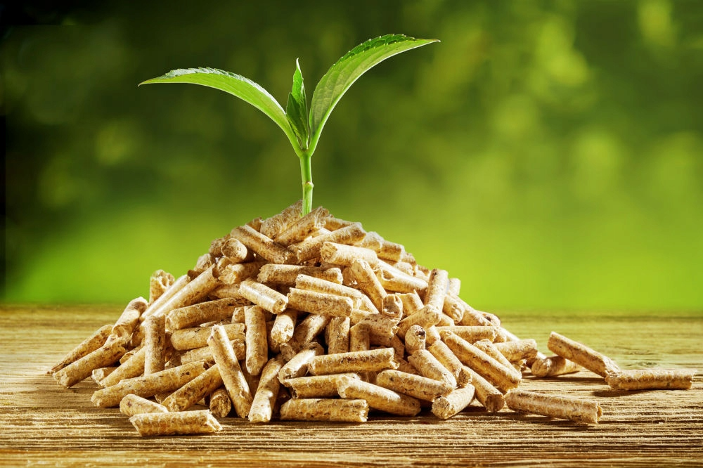
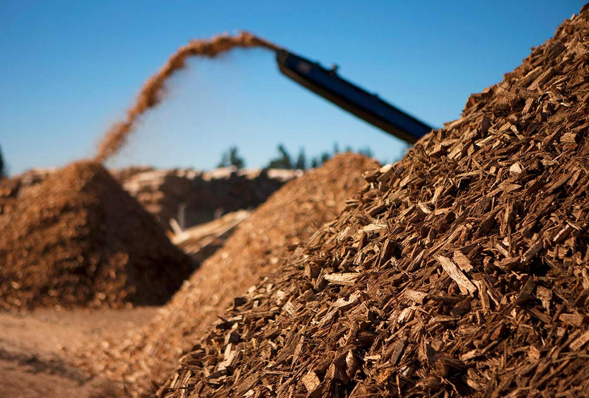

People have used biomass energy—energy from living things—since the earliest “cave men” first made wood fires for cooking or keeping warm.
Biomass is organic, meaning it is made of material that comes from living organisms, such as plants and animals. The most common biomass materials used for energy are plants, wood, and waste. These are called biomass feedstocks. Biomass energy can also be a non-renewable energy source.
Biomass contains energy first derived from the sun: Plants absorb the sun’s energy through photosynthesis, and convert carbon dioxide and water into nutrients (carbohydrates).
The energy from these organisms can be transformed into usable energy through direct and indirect means. Biomass can be burned to create heat (direct), converted into electricity (direct), or processed into biofuel (indirect).
 Thermal Conversion
Biomass can be burned by thermal conversion and used for energy. Thermal conversion involves heating the biomass feedstock in order to burn, dehydrate, or stabilize it. The most familiar biomass feedstocks for thermal conversion are raw materials such as municipal solid waste (MSW) and scraps from paper or lumber mills.
Different types of energy are created through direct firing, co-firing, pyrolysis, gasification, and anaerobic decomposition.
Before biomass can be burned, however, it must be dried. This chemical process is called torrefaction. During torrefaction, biomass is heated to about 200° to 320° Celsius (390° to 610° Fahrenheit). The biomass dries out so completely that it loses the ability to absorb moisture, or rot. It loses about 20% of its original mass, but retains 90% of its energy. The lost energy and mass can be used to fuel the torrefaction process.
During torrefaction, biomass becomes a dry, blackened material. It is then compressed into briquettes. Biomass briquettes are very hydrophobic, meaning they repel water. This makes it possible to store them in moist areas. The briquettes have high energy density and are easy to burn during direct or co-firing.

People and Biomass
Advantages
Biomass is a clean, renewable energy source. Its initial energy comes from the sun, and plants or algae biomass can regrow in a relatively short amount of time. Trees, crops, and municipal solid waste are consistently available and can be managed sustainably.
If trees and crops are sustainably farmed, they can offset carbon emissions when they absorb carbon dioxide through respiration. In some bioenergy processes, the amount of carbon that is re-absorbed even exceeds the carbon emissions that are released during fuel processing or usage.
Many biomass feedstocks, such as switchgrass, can be harvested on marginal lands or pastures, where they do not compete with food crops.
Unlike other renewable energy sources, such as wind or solar, biomass energy is stored within the organism, and can be harvested when it is needed.
Disadvantages
If biomass feedstocks are not replenished as quickly as they are used, they can become non-renewable. A forest, for instance, can take hundreds of years to re-establish itself. This is still a much, much shorter time period than a fossil fuel such as peat. It can take 900 years for just a meter (3 feet) of peat to replenish itself.
Most biomass requires arable land to develop. This means that land used for biofuel crops such as corn and soybeans are unavailable to grow food or provide natural habitats.
Forested areas that have matured for decades (so-called “old-growth forests”) are able to sequester more carbon than newly planted areas. Therefore, if forested areas are not sustainably cut, re-planted, and given time to grow and sequester carbon, the advantages of using the wood for fuel are not offset by the trees’ regrowth.
Most biomass plants require fossil fuels to be economically efficient. An enormous plant under construction near Port Talbot, Wales, for instance, will require fossil fuels imported from North America, offsetting some of the sustainability of the enterprise.
Biomass has a lower “energy density” than fossil fuels. As much as 50% of biomass is water, which is lost in the energy conversion process. Scientists and engineers estimate that it is not economically efficient to transport biomass more than 160 kilometers (100 miles) from where it is processed. However, converting biomass into pellets (as opposed to wood chips or larger briquettes) can increase the fuel’s energy density and make it more advantageous to ship.
Burning biomass releases carbon monoxide, carbon dioxide, nitrogen oxides, and other pollutants and particulates. If these pollutants are not captured and recycled, burning biomass can create smog and even exceed the number of pollutants released by fossil fuels.